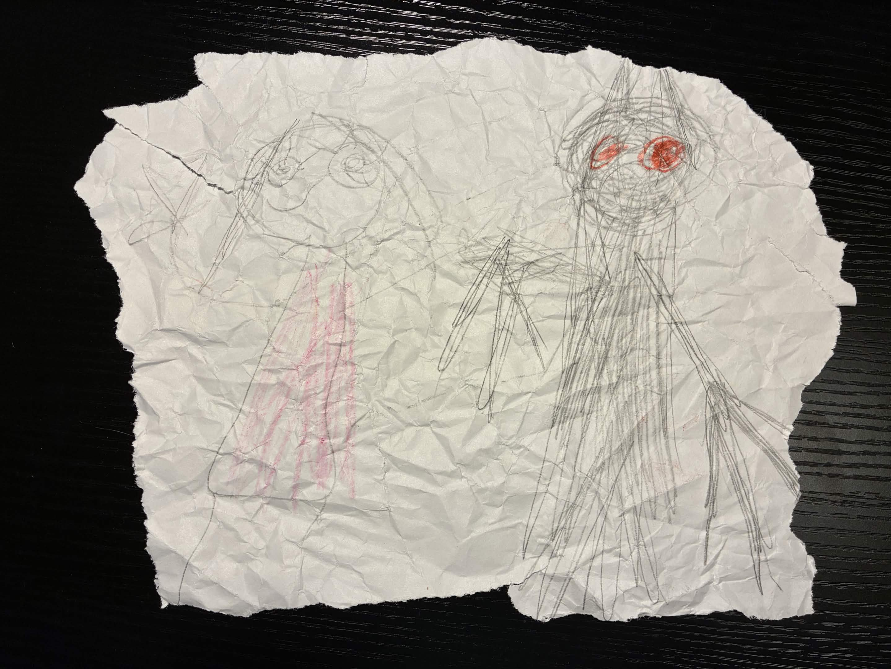
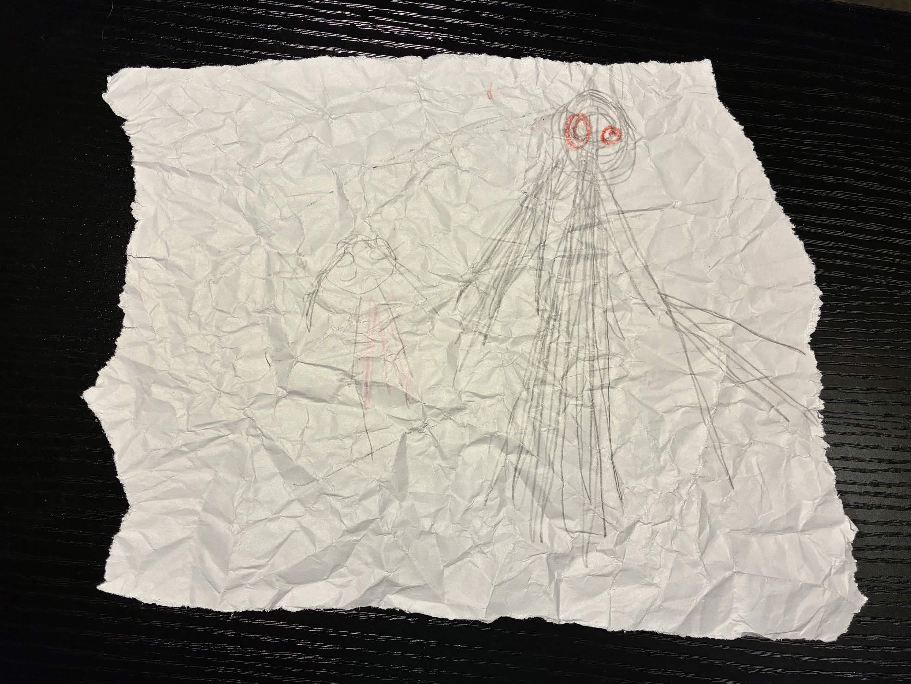

Arcohaem Pt. 1: The Wolves of Arcohaem
Chapter 1: In Medias Res
It's the winter of 12c, 1266. 5 years ago the Wolves were formed. 5 weeks ago, they were dispatched to locate Krothmire. Krothmire is a secret Frigoshian prison camp hidden deep in the eastern Howling Front, the unmoving line of combat between Frigoshia and the Republic. The war prisoners there are forced to work in forges, and kept barely alive. The cover of night coupled with a powerful snowstorm has given them an opportunity to approach the prison undetected.
The mission proceeds fairly simply. Lukas debated whether to fireball a room with his friends in it, but ultimately didn't. One day, he'll get the chance to fireball some Frigoshians. Olaf then masterfully convinced two guards that he had important news of their father. They sat on the edge of a cliff to listen, and Olaf pushed them off and they plummeted to their deaths. Truly a wild gambit that somehow paid off. Iona nearly drowned a few guards, and together, they defeated those that remained. They freed the prisoners of Krothmire.
Suddenly, Ron hears a loud beeping sound coming from his pocket. It's a small triangular marble beacon no larger than the palm of his hand. A small blue sphere in the center is beeping, transmitting an encoded message from Commander Kragknull. After some translation, to their shock, their ongoing mission of 5 weeks has been prematurely cancelled! The message reads:
"EMERGENCY. BY ORDER OF THE CHANCELLOR, RETURN TO THE CAPITAL IMMEDIATELY. THIS IS A MATTER OF NATIONAL SECURITY. ONGOING MISSION NULLIFIED. - COMMANDER KRAGKNULL."
Chapter 2: Long Live the Republic
1 week later, the Wolves return to Hephaestus. Lukas jumped in a well, Olaf and Ron bought poison, Olaf searched tirelessly for furries and then scammed people, and they were greeted by fans. All of them bought a bunch of stuff using their government pay.
While exploring the town, they spot a bunch of little details. There are comic books about them, but they're extremely exaggerated. There are also comics about the other major heroes of Arcohaem, like the Karlstad Crusaders. Tucked away in a corner are some old recalled comics about Captain Terrik, who they learn was an ex-soldier that went nuts and was rightfully exiled.
There are also propaganda posters throughout town.
- Where will you tell your kids you were during the war?
- What happens to them if you don't act fast enough?
- Don't fight for terrorism! Report Frigoshian activity!
- Everyone's enlisted - what about you?
- Fight for their future.
- Frigoshian? Or just a coward in fur?
- Frigoshia is fighting for squalor - don't let them win!
Chapter 3: Your Mission
They decide to head to the Senate building to receive their mission. They're greeted by Commander Kragknull, who's been waiting for them. Though largely a stoic person, he's close to the Wolves and is excited to see them again. After exchanging hellos, he sits them down and lays out the situation.
"I've been a commander since the beginning of this war. Over that time, I've seen the Frigoshians sink to lows even I didn't think they'd cross. They fight and kill without mercy, or identity, or voice, all so that they can enforce their primitive lifestyle onto us. It confounds me why some of our own citizens go out of their way to protest this conflict like we're somehow at fault here. With all of that said, I didn't think anything they could do could surprise me... but this most recent development is so terrible that I've been sick with dread for the past week. Two weeks ago, 5 of our soldiers were separated in the heat of battle and got lost wandering the eastern Howling Front. While wandering, they discovered a Frigoshian transport carrying incubation equipment, and the first dragon egg we've seen in centuries. This has led the Senate to believe that the Frigoshians are running a covert dragon incubation program, likely for military use. A single adult dragon could decimate Hephaestus before we even got a chance to respond. We don't know how many they have, and our armies aren't getting close enough to the capital to stop them. So the Senate approved a secret mission to infiltrate Frigoshia, locate the program, and shut it down. To the senate's surprise, Chancellor Kaul personally selected you 5 for this mission. I don't think I have to explain why that wasn't a popular decision. I believe you're more than capable for this mission, but your track record is inconsistent, so you'll need to step up to prove yourselves to the Senate. Like I said, your mission has three parts:
- First, you need to infiltrate Frigoshia. None of our armies have ever been able to push through the Howling Front, so you'll need to be clever when going through or around it.
- Second, you need to locate the dragon breeding program. It's likely hidden within the Frigoshian capital Torhild. We have no reconnaissance beyond the Howling Front, so expect the worst. You need to be fast, quiet, and ready for a fight. Don't trust anyone there; even someone as young as 8 could be trained in Frigoshian combat.
- Third, you need to destroy it, and eliminate any living dragons and eggs. It is of the utmost importance you don't miss any, because if even one is left, it could spell disaster for the Republic, and for all of Serendipita."
Then, they planned their mission. They're going to travel to Ammalor and charter a ship as far north as possible. That will allow them to cut into Torhild without moving through much of the Howling Front.
Part 2: Just Like the Simulations
Chapter 4: Ammalor
The Wolves moved from Hephaestus to Ammalor to search for a ship to charter. Ammalor is known far and wide for its artisans, trade, and craftsmanship due to being a hub of travel and trade for Arcohaem. The ports were bustling, the shops were overflowing with merchandise, and the streets were lined with the rich and powerful.
Seeing the wealthy, and without hesitation, Olaf set up his scam and began to con people. Over the course of the next hour, he made a whopping 700gp with rigged games and cons. While this was happening, Ron consumed an ungodly 20 imported Ambrosine fish tacos.
Focused on the mission, Iona and Lukas began to search for a ship to take. Most rejected or avoided them upon seeing their military outfits, except for one. Marrek is an older, sketchier man. He told them he won't ask any questions if they don't ask him any questions. He offered to take them for 100gp each plus 1000gp to armor the ship. Supposed "volcanic activity" has been wiping out ships in the north. On top of that, there's a large Frigoshian blockade that he'd have to avoid. So, they'll have to take a tiny private ship in complete darkness to avoid getting noticed. The furthest he'll be able to take them is Freyrhage because of the blockade.
Lukas was suspicious. The captain is very clearly involved in criminal activity, and his code of "no questions both ways" is definitely strange. Iona trusted him right away, and with some negotiation from Ron, they got the ship armored and prepared for the voyage.
While sailing, they heard some mysterious noises coming from the water. There were large bubbles erupting from the water around their ship. They definitely seemed organic, but Marrek claimed they're just the "volcanic activity" he mentioned earlier. Just then, they heard some splashing off the back side of the boat, which stopped the bubbling. Something was thrown into the water.
Marrek retreated into his private quarters. Suspicious as always, Lukas asked Olaf to pick the lock to let them in. Olaf did so flawlessly, and they entered his quarters. They found a small rusted lockbox under his desk. Inside was a rusted dagger with draconic emblems etched into it. Marrek caught them, but he wasn't worried. He explained that he found it while doing a job with an anonymous treasure hunter. The guy died getting it, and Marrek lost the tip of his middle finger in the process. The dagger predates the founding of the tribes of Arcohaem, but is far more advanced than anything in that time. So, it's impossible. He doesn't know who made it, but the thought that there's always more out there keeps him sailing.
Marrek orders them to leave his quarters. Not willing to listen, Lukas threatened and berated him. Marrek yelled that they had an arrangement, and that he'd kick him off the ship. Not taking the hint, Lukas continued to irritate, threaten, and abuse his "authority" over Marrek. Finally, Marrek had enough. As they docked in Freyrhage, Marrek threw Lukas off the ship and insinuated that he'd "get what's coming to him." In retribution, Lukas attempted to burn him, but it strangely had no effect.
Chapter 5: Freyrhage
The port of Freyrhage was massive but hastily constructed and largely abandoned. A large third-party militia from out-of-country had moved in. They'd assembled fences, guard routes, and large metal towers. A Frigoshian flagpole had torn down, giving them the hint that Freyrhage didn't want to be associated with Frigoshia anymore.
Freyrhage was established some 35 years ago to capitalize off the port. A lot of care went into the town, but when the war began, they were forced into joining Frigoshia. They recently declared independence and hired the militia to protect them from the incoming battalion.
Iona, furious with Lukas' actions with Marrek, split off from the group. He then met Emily Persson, who was pushing her elderly mother-in-law Annette. Unfortunately, the wheelchair was jammed. Iona helped her, and she recognized their armor. She invited them to join her family for some roast duck.
Before the dinner, Ron consumed the "Four Horsemeals of the Eggporkalypse" and crapped himself to intimidate the restaurant owner. He was then invited by Iona to join the dinner. Olaf met Danny and Danielle Persson. Danielle is incredibly outgoing and Danny is super shy, but they liked Olaf. That was, until Olaf attempted to fake his death in front of them, leading to much confusion. Iona invited Olaf and (begrudgingly) Lukas to join the dinner.
At the dinner, Ron quickly formed a simple friendship with Erik Persson, a slovenly but big-hearted father who communicated through grunts and small sentences. Olaf impressed Danny with his military stories. Lukas jokingly flirted with Emily Persson, and then met Danielle, who reminded him of his sister. Danielle gave him her pop-up book, which notably had her name and address in it in case he ever wanted to come back. Iona accidentally got drunk off a single drink of blubberbutter beer, and started dancing. He had a blast with everyone.
The Perssons wanted to flee, but they couldn't afford it because of Marrek's ridiculous asking prices. Besides, they didn't know if Annette would even survive the journey; she was pretty old and couldn't walk. The Perssons stressed that they trusted the militia, and that they would always lock their doors at night.
Chapter 6: Borderlands
After a fun night, they got back on track with their mission. They began moving dead west through the arctic plains. Iona, keen as ever, spotted something atop a cliff. There was a solid black human-ish silhouette a few miles away. It was just... watching them. Getting a closer look, he noticed that it'd vanished. Lukas, getting an inkling of what this might've been, began having PTSD.
After about an hour of walking, they found themselves in a series of small icy ravines. They stumbled into a cliff, and discovered a full battalion stocked with explosives, weapons, and over 200 Frigoshian soldiers. To their horror, they were then ambushed by a Frigoshian soldier.
They quickly overpowered him, causing him to beg for mercy. He gladly shared information about his family, and he dropped everything he had. His name was Alric Grimvell. He acted very strangely; he was very relaxed, he made jokes, and he didn't seem to be afraid. His eyes didn't really emote, but that could just be because he's a Frigoshian soldier. His armor was patterned and fancier, so he claimed that he'd just been promoted to "squad leader." He said he was forced into the military and that he won't tell anyone he saw them. Oddly, he recognized the Havran family ring, which is not only an insane feat of perception, but is a really obscure thing for him to even know about.
He agreed to reveal what his battalion is planning if they let him go. While he was talking to them, he got their names, how they got here, and what they'd been up to. Ron wasn't buying it, but no one else wanted to resort to murder just yet on the off-chance he was innocent. They took the deal, and he revealed that his battalion was going to wipe out Freyrhage for rebelling, and then they were going to move on to Mosegard to push through to Lemnaeus. They're attacking at sunset, which was in a little over an hour.
Alric noticed the pop-up book Danielle gave Lukas. Thinking it odd, he swiped it while giving Lukas a thankful hug. He then vanished.
Chapter 7: Me? I'm Nobody
They called Commander Kragknull, who was talking with his friend Senator Finn, and he encouraged them to warn the town. However, they shouldn't under any circumstances risk their mission for Freyrhage since they weren't even really associated with the Republic.
They mentioned Alric, and Kragknull acted funny. Something was wrong; Kragknull knew that name from somewhere. There was no way Alric was just a squad leader. If Kragknull knew him, then he probably wasn't dumb enough to attack a squad of Republic soldiers by himself, largely unarmed.
Ron used all of his teleports to chase after a trail of footprints in the snow. To his dismay, they were dummy scouts Alric had sent to distract them. He had gone towards the town, but they didn't understand how he moved so quickly or what he was doing. Lukas then had a horrifying realization; the pop-up book was gone. Alric had taken it... but why?
Reaching the town, they found the front guard missing. He had been killed and dragged into the bushes, where his face and eyelids had been removed. He was dying and coughing up blood. He said someone had pretended to be lost and then stabbed him. The guard died terrified.
They looked for the Perssons and found the front door open and the window smashed. They never left their door open. They knew Alric was inside. They slowly walked in and found the living room trashed and Annette collapsed on the floor in a pool of blood. A single candlelight burned behind the kitchen door, and they could hear muffled voices.
After much deliberation, everyone but Ron entered the kitchen. Ron climbed to the roof to check for anyone else. A kettle was cooling on the stove, still making a low whistling. In the center of the room, Erik and Emily were tied to chairs and gagged. In the corner, Danny and Danielle were tied to each other. Their eyes were wide with horror and they were looking to the back door, but nothing could be seen.
Just then, they heard a voice say, "Hey! I was wondering if you'd even show up!" Emerging from the darkness was Alric. He was holding a gun to Emily's head and sipping a cup of fresh tea in the other. He had a warm and friendly smile across his face. "It seems you're already acquainted with the Perssons," he said, gesturing to the pop-up book, "Danielle at least. I owe you an apology; I wasn't entirely honest with you earlier. I'm the captain of that battalion you saw earlier. My men spotted you coming and I figured I'd introduce myself to you fine people. Here's what I'm having trouble with. An elite Republic strike team, all alone, in Freyrhage of all places. That just doesn't sit right with me. So," he said, cocking his gun and pressing it to Emily's head, "who are you, and what are you doing here?"
Olaf told him that they were there to sabotage supply lines, but Alric didn't buy it. They were far too high-ranking for that, and Freyrhage hadn't been active in a long time. He counted down from five, and then shot Emily. He asked again and pointed the gun at Danielle. Ron climbed down from outside and attempted to shoot Alric through the window, but missed, causing him to shoot Danielle. Lukas screamed in rage, but Alric calmly told him to relax. He had told them the rules, and they had broken them. Lukas panicked and revealed their true mission to Alric. He told Alric about the dragons, the incubation, everything. To their horror, he was skeptical, because he hadn't heard anything about dragons and he was a captain. Ron suggested Alric hear it from Commander Kragknull, who quickly realized they were being interrogated and poorly lied. Alric shut it down. Ron made another move, and Alric shot Danny. With only Erik remaining, Ron used Death Ward to protect him from death. Iona then water bubbled Alric, knocking him prone. This action caused Alric to again fire at Erik, but Death Ward protected him from death and instead knocked him unconscious. They all seized the opportunity to beat and trap Alric. He convinced them to keep him alive long enough to get information out of him. They took his body and fled as Freyrhage was raided and burned down. No one else made it out. The raid was brutal, and the sounds of screaming was burned into their minds for the next several hours.
Chapter 8: Nocturne
After running for hours into the woods, they made camp and reflected. They contacted Kragknull, who was infuriated that they had revealed the mission. He told them to be more careful, since they nearly blew the whole mission. Alric was injected with Olaf's truth serum and revealed that he truly didn't know anything about the dragons. He had also broadcast their conversation on an open channel, meaning there was a good chance someone had overheard. They decided they were done with Alric, and so they killed him, with Erik Persson dealing the killing blow. Lukas turned him to ash, and Iona dissolved his bones in acid. While dying, Alric smiled, enjoying the pain and getting outplayed by someone else.
They had a deep-seated distaste for Frigoshia that had finally boiled over into pure unadulterated hatred. Lukas held the now bloodied pop-up book, feeling a desire for vengeance he hadn't felt since his squadron had been attacked by the Wraith.
Part 3: For the Republic!
Chapter 9: Rain Fire!
This isn't cannon, but Ron did reach out to the interdimensional halfling lawyer Small Goodman N ON (old) to attempt to sue Doornail for violating the terms and conditions of his oath.
It had been a couple days of travelling. They'd moved out of Freyrhage and into Beirdall. Beirdall is completely surrounded by water and is easily accessible from Karlstad, making its western river a deeply contested territory.
It's about 4 in the morning, meaning it's still completely dark outside. The Wolves made camp by a small creek cutting through the woods. Ever since Freyrhage, they've been hearing loud mechanical noises getting louder and closer. Tonight, they heard the following:
They're all a little paranoid, but it doesn't seem pressing right now. Ron consumes 5 pounds of frostberries and 2.5 pounds of Tinkle Winkler's frostberry jam.
Speaking of, where was Tinkle Winkler? Apparently, he had stayed behind to help try to grow "Winkler Nation." He had been mildly successful, amassing a group of 5-ish loyal followers in Hephaestus. He took his own boat into Freyrhage and caught a brief glimpse of the destruction therein. After that, he continued moving, and saw the remnants of the Frigoshian encampment. Eventually, he found the rest of the Wolves, but it took awhile.
As they're walking, they encounter a group of orphans hiding out in the middle of the woods in a rudimentary fort. They're triplets, and they were living near here but their parents were killed in the skirmish. They're names are Boggis, Bunce, and Bean. One's short, one's fat, and one's lean.
Boggis quickly sides with Tinkle Winkler after learning about the glory of Winkler Nation. Bunce and Bean go back and forth between Lukas and Olaf, but eventually side with Olaf after Lukas lights their hair on fire in what can only be described as racially motivated vengeance for the actions of Captain Alric.
As they continue moving west towards the river, they begin to hear the sounds of explosions and gunfire, and find the beaches swarming with Republic soldiers. Frigoshia has sent a galleon up the river to attempt to destroy the Republic camp. Just then, they spot some people they haven't seen in ages: the Karlstad Crusaders!
The Karlstad Crusaders are a contemporary of the Wolves of Arcohaem. They've served under Commander Ragnar for a few years, but have been around the Republic military elite since the beginning of the war. They're composed of four members:
- Sigvald Brenn is a Dragonborn Paladin and the leader of the group. He's a reasonable man who's loyal to his men. He grew up poor, but he managed to go to the same high school as Lukas due to his cousin's connections.
- Drek Halvos is a Changeling Fighter / Rogue, and the spy of the group. He's a sadistic kleptomaniac who's in the war for the violence and the spoils. While off-duty, he's obsessed with money. He's uncomfortable to be around unless you know him very well. He had a violent incident at an Arcobee's and was arrested and eventually drafted into the military.
- Aska Taure is a Minotaur Barbarian, and the tank / cook of the group. He's got a loud laugh, is super kind and warm, and loves food. He also is incredibly gullible and pretty stupid. Half of his belief system is built on obvious lies.
- Karl "Oscar" Oskarby is a Tortle Cleric and the medic / moral compass of the group. He's a quiet and kind dude who likes Arizona iced tea, writing, and painting. He really doesn't want to be here. He was drafted at first, but is making the best of things with the Crusaders.
Suddenly, canon fire forces them to all take cover.
Chapter 10: Shorline Siege
Over the next several hours, they fight their way through a small army of Frigoshian soldiers and their minions. Lukas and Iona create walls of fire and ice, Olaf is thrown by Ron to the other side of the river, Tinkle Winkler protects and stays with Erik Persson and the orphans, Lukas explodes a Frigoshian galleon, and the Karlstad Crusaders work together to clear out the enemies on the sidelines.
After the battle, a Frigoshian begs for mercy. They don't make the same mistake twice. They kill him quickly.
Strangely, they spot a small group of ~6 Frigoshians sprinting away from the battle after seeing the ship go down. They're too far away to catch up, but they're moving in the same direction as the Wolves need to go in.
Chapter 11: We Go Way Back
They have some time to relax and eat a meal with The Karlstad Crusaders. Aska makes them food and tells some tales he heard:
- I was talking to a guy and he said he saw the Frigoshians drink blood from the skull of a Chupacabra. Chupacabras are demon dog things. My uncle's best friend Kai swears to this day that he saw one.
- A soldier we captured told us about a time that Captain Alric blew up a school with nothing but tree sap and spices.
- One time a bunch of Frigoshians tried being friends with Republic soldiers, and then while the Republic soldiers were sleeping, they cut off their wangs! Can't trust 'em!
Drek attempted to rob Olaf, and Olaf robbed his stuff back. Karl and Iona shared Arizona Iced Tea while he tended to their wounds. Drek walked around naked while Karl washed his clothes. Then, Sigvald and Aska got into an argument over whether or not the Wraith is real. Sigvald and Commander Ragnar think it's just a bunch of unrelated killings that have been fallaciously linked after the fact. Aska swears he knows people who've seen it. Lukas shares that he's seen it and they don't believe him. Sigvald agrees to take the orphans and Erik back to Hephaestus, and they all part ways.
Kragknull contacts them with some important private information. A bunch of people disappeared last night, including the overseer of the Republic bank. All of his files were burned or looted, so there's a lot of paranoia right now. The Chancellor is so panicked that he elected a new Lord Commander to oversee the Royal Guard. He's from out of government, so no one really knows him yet. Some dude named Galen. Here's the issue. Kragknull and Finn believe they know who's responsible. However, if they're wrong, they could be executed. He isn't allowed to do what he's about to do, but he has to for the sake of the Republic. He hopes their mission goes well and that they return safely, cause they're his favorite team he's ever commanded. Also, the place they're moving through next is incredibly isolated. The communicators tend to break down there due to some kind of "interference." Basically, they're gonna be on their own for the first time. Iona tells Kragknull he loves him, and they all say goodbye.
Part 4: Enemy of my Enemy...
Chapter 12: Now That's a Famous Hat
They're very close to entering Torhild, the capital of Frigoshia. They've been hiking and camping for days now. The woods and mountains all look the same, and they've lost track of where they are. By their best estimation, they're somewhere in the western wilderness of Havbo.
It's about 10pm, and they're all lying in a circle by the campfire. Sleeping will be difficult, though, as for the past few nights, those noises they've been hearing in the woods have been getting louder and closer. It can't be more than a mile away this time.
That coupled with the knowledge that they've lost all contact with the outside world has made the past few nights stressful. No one had actually tried using the radio yet, but Commander Kragknull said it wouldn't work due to unspecified "interference."
All of the Ether users in the group began to notice a low, dull pressure. Like their ears needed to pop, or like there's static buildup in the air. They weren't sure how, but it felt like their abilities were being tampered with.
They decided to attempt to use the radio, and this is what they heard on their Republic issued radio:
This is what they heard on their stolen Frigoshian radio:
The immediate theory was that the second transmission was coming from a train, but some believed it may have been some form of mechanical march. The first transmission was much more ambiguous.
They built an ice shield around them to protect them from any potential attackers, and Olaf began teaching a frog pattycake. Lukas and Ron began a routine night watch to make sure they weren't caught off guard. Winkler camouflaged himself outside in the snow and mud.
The fire slowly died down, and most everyone began to doze off. Lukas, the first on the night watch, heard a branch snap a few feet away, into the woods. His eyes snapped open. The pitch black darkness meant very little could be seen beyond blurry silhouettes. He squinted his eyes as they adjusted to the darkness. About 10ft back, behind the ice dome, and behind everyone, partially obscured by a tree, was a tall, stretched shape lurching back and forth. His blinked hard, and the figure was gone.
Inside the dome, Ron noticed a tall, slim shape in the middle of the camp where the campfire once was. He got closer and lit a torch to investigate. It was a head on a pike, missing its eyelids. The face was beaten, and locked in a melted, droopy, almost horrified expression. Below the head was a small, parchment note written in shoddy bloodied handwriting--akin to a child fingerpainting. The message was short and simple, "Tommy shouldn't play in the woods." He investigated the face, but it was bruised and bloodied to such an extreme degree that he couldn't identify age or gender; his best guess as a medical professional was that this was a very young boy--possibly 10-12 years old.

It was at this point they realized they hadn't seen that group of Frigoshians that ran ahead of them anywhere. They'd been moving in the same direction, but they'd somehow stayed ahead of them this whole time.
The party shot awake and began clamoring for answers. How did this get *inside* the dome without an entry or exit point? Who was on the pike? Why was this thing leaving messages for them? The vulnerability of their situation caused a creep of adrenaline that kept their red and stinging eyes forced awake. They decided the best course of action was to leave. Lukas attempted to use fly, but the staticky feeling from earlier returned, and all he did was create a large spray of red mist. Something was tampering with their abilities and keeping them from using any ether abilities to get away.
There was a town not a half-mile along the border of the woods they could camp at and potentially fortify. The reached the town of Arrah under the light of the full moon. It looked abandoned, possibly for decades. Their standard issue Republic flashlights cast thin, muted beams across the narrow forest path. There were next to no standing structures left, but there was a white wooden wall about 20-30ft to their right.
The lone wall was riddled with deep, violent claw marks, and splattered with a mist of blood. By the wall was the tail end of some deep red drag marks leading off into the woods. The only evidence of what was here prior was a severed leg in Frigoshian armor. The leg was completely ripped out of its socket, armor and all. Powerfully painted into the wall with the same bloody red as the parchment, was the message, "GO HOME WOLVES."
They began to argue about where to go next. Their mission so far had been to enter the capital from the north, since it's thinly guarded due to the harsh wilderness and gigantic mountain range. The way forward is protected by this forest, regardless of what direction they enter from. If they don't want to go through the woods, they could backtrack and attempt to enter Torhild from the south, which means going through the Howling Front, and through all of their primary defenses. There was good reason they wanted to avoid that. They could also listen to the writing on the wall and just go home.
Not wanting to risk the mission, they cautiously entered the forest of Arrah...
Chapter 13: Mr. White? He's the Devil
It was pitch black, and all that could be heard over the sounds of the forest was the crunch of snow under your feet. Tinkle, leading the formation, then stepped on something that didn't feel like snow. Looking down, he saw a severed Frigoshian head. Similar to the leg, it'd been completely ripped off by something very strong.
Suddenly, about ten meters ahead of them, they saw the dim flicker of light, and whispers. Lukas snuck forward to investigate and found not a monster, but a group of grievously wounded Frigoshian soldiers. None of them were wearing their helmets, but were instead tending to their wounds, pointing spears into the darkness, and scouring some old maps. Their commander turns around and spots Lukas, he then lets out a high-pitch screech, and yells, "God dang it! What the he-don't do that to me man!"
Lukas prepared to firebolt the group, but the man--Major Ritva--began to break down the situation.
"Wait! We come in peace! Please, just listen to me first." He pleaded. Lukas paused, then lowered his guard to let the man speak.
"About twenty minutes ago, we were making camp in Arrah when we were ambushed. We couldn't hear it or see it until it was too late; it tore us apart in seconds. It's faster than you, it's stronger than you, and it's smarter than you. Our maps are outdated, but there's a cave system about a hundred meters north of here that cuts through the mountains and will get us out of the woods. We can escape this thing if we stick together! I know you're from the Republic, but there's safety in numbers, and if we split up, we'll all die. I'm willing to let bygones be bygones just this once. I'm not saying I agree with you on anything, and I'm not guaranteeing anything once we make it through the pass, but I don't want my men to die, and I assume we at least have that much in common."
The rest of the party joined Lukas and began deliberating. Vetle paced back and forth, not wanting to waste any more of their already very limited time. They begrudgingly decided to go with the Frigoshians and bolted deeper into the woods. As the ran, a piercing call cut through the eerie silence of the woods. It felt right behind them as they ran:
They arrived at a small clearing surrounding a bolted metal door with a bulletproof glass pane. The Frigoshians began rapidly unbolted the hatch, but years of icy rainfall had frozen it over. They began to panic and rapidly bang on the latch with their weapons.
The party assisted, and managed to melt or move the ice off the door. The rest shattered, and the door slowly creaked halfway open. They clamored to get inside, but before they could, they heard one of the Frigoshians standing guard scream. Ron whipped his head around, only to see his body being dragged into the darkness by his feet. They rushed inside. BANG! BANG! BANG! All three of the locks on the door slam shut. The door was at least half a foot of solid steel.
Everyone else began to take huge relieved breaths to prepare to keep moving, but Ron peered out the dirty window to look for the Wraith. Muffled screams and gunshots got quieter and quieter, until nothing but silence remained. Ron got closer to the window, until BANG! The severed head of the Frigoshian guard smashed into the glass so hard that it left huge spiderwebbing cracks all throughout it. Seeing this, the rest of the Frigoshians stood and began to sprint away. Then, they finally saw him. The Wraith's beady red eyes and black horns emerged from the darkness and began to approach the door.
At this point, Iona rightly questioned Vetle on why the "cavern pass" he was discussing featured a gigantic bunker. Ritva said his maps were outdated, and he didn't know it was going to be there. They all sprinted through the bunker anyways. They ran through a cracking tile hallway with dim red lights, and heard a loud crash behind them. Suddenly, the entire freaking vault door was thrown down the hall towards them, bashing Tinkle Winkler in the back of the head, and knocking him prone. The door lodged itself in the wall, and the sound of the Wraith's crashing footsteps thundered down the hallway. Tinkle Winkler got to his feet and they all continued running deeper and deeper into the structure...
Chapter 14: Stranger Danger
I forgot to take notes on what happened here on accident. Here are the major important things they found as they progressed through the bunker and evaded the Wraith:
SECTION A
- They went into a flooded hallway and the Wraith wouldn't follow them into the water for some reason.
- They found a frozen prison that had fresh Frigoshian corpses.
- They found the crew quarters, with a calendar going back to February 16th, 12c 1256. 10 years ago. Each Friday going back to the start of the war is marked with either green or red marker, denoting successes or failures.
- They found a locked brass door and decoded the Frigoshian cipher to progress. While in that control room, they reactivated the power and saw a monitor that displayed the static message, "Proto Left the Room."
- They climbed up the ladder shaft and threw a stick of dynamite at the Wraith, which did very little to hurt it beyond buying them time.
SECTION B
- They went into the sewers and split up. Half the team went into a collapsed cistern, and the other went into the caves.
- In the caves, Lukas and Iona spotted something odd. The Wraith was gaining on them, but there was a hidden, man-made path leading even deeper into the caves. Lukas went for it and found a strange room. There's a bed, a broken lantern, and all manner of weapons. An older Republic flag was tucked away in the corner. Judging by the design, you'd say it was 12-15 years old. There's also a collection of children's drawings showing the Wraith holding hands with a little girl. Even further in was an elevator leading to somewhere *very* deep underground. A faint red glow came from below the surface. The elevator had been destroyed, and Lukas decided not to push his luck and ran back and rejoined the group, unable to decipher what was down there.



- Ron encountered the Wraith and noticed that it appeared to want the drawings back.
- They were attacked by a rope bridge, and if not for death ward, Ron would have died. Iona created an ice bridge and nearly fell down into the caverns.
SECTION C
- They entered a tall cylindrical room and saw the morning light beginning to shine.
- They entered a laboratory. A huge tangle of thick roots covered every surface. The organism was unlike anything they'd ever seen. It was a hybrid of some kind. It's mostly wood, but some of it is hairy and covered in red scales.
- They entered the Officer's Quarters. It was trashed, but there was a set of heavily redacted and damaged files labeled "Project Amalgamma."
- They entered a radio room. It's silent for a moment, and then a distorted voice said, "Proto left the room." It repeats over and over. It's a 15 second message that has been going for 14,726,666 iterations.
- They stole some old Frigoshian uniforms.
Chapter 15: Roots
They broke through the exit door and ran outside. They completely collapsed the door behind them, buying them enough time for them to get away from the Wraith. They climbed into an old boat and went across the waters into Tjernfell.
Exhausted, they all collapsed. The only surviving member of the Frigoshian team was Vetle Ritva. He pulled out his pack and heated some stewed oilfish, which sounded disgusting. It ended up being pretty good, like 6.5/10. He talked about how he sometimes misses the time before the war. He still thinks the Republic is horribly corrupt, but he understands why they'd dislike Frigoshia. He argues that they're all branches of the same tree, and not all of them are bad. He misses his men, and thanks them for sparing his life. He offers to give them a hand in return sometime in the future. He's gone in the morning.
After one more day of travel through the mountains, they'll be in Frigoshia, and complete the first leg of their mission...
Part 5: Friend of My Friend?
In progress...
In progress...